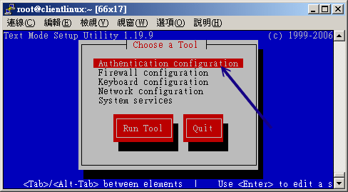
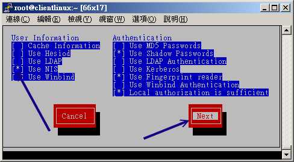
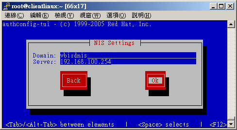

14.3 NIS Client 端的设定
我们知道网络联机是双向的，所以 NIS server 提供数据库档案，NIS client 当然也需要提供一些联机的软件啰！这个联机的软件就是 ypbind 啦！此外，如同图 14.1-1 的介绍，在 NIS client 端有登入需求时，NIS client 基本上还是先搜寻自己的 /etc/passwd, /etc/group 等数据后才再去找 NIS server 的数据库啊！所以 NIS client 最好能够将本身的账号密码删除到仅剩下系统账号，亦即 UID, GID 均小于 500 以下的账号即可， 如此一来既可让系统执行无误，也能够让登入者的信息完全来自 NIS server ，比较单纯啦！
Tips: 事实上，你想要让 NIS 服务器写入的各项账号数据都在 NIS server 的 /var/yp/Makefile 那个档案设定的！ 你可以进入该档案搜寻一下 UID 就知道了！ ^_^

14.3.1 NIS client 所需软件与软件结构
NIS client 端所需要的软件仅有：
- ypbind
- yp-tools
yp-tools 是提供查询的软件，至于 ypbind 则是与 ypserv 互相沟通的客户端联机软件啦！ 另外，在 CentOS 当中我们还有很多配置文件是与认证有关的，包含 ypbind 的配置文件时， 在设定 NIS client 你可能需要动到底下的档案：
- /etc/sysconfig/network：就是 NIS 的领域名嘛！
- /etc/hosts：至少需要有各个 NIS 服务器的 IP 与主机名对应；
- /etc/yp.conf：这个则是 ypbind 的主要配置文件，里面主要设定 NIS 服务器所在
- /etc/sysconfig/authconfig：规范账号登入时的允许认证机制；
- /etc/pam.d/system-auth ：这个最容易忘记！因为账号通常由 PAM 模块所管理， 所以你必须要在 PAM 模块内加入 NIS 的支持才行！
- /etc/nsswitch.conf ：这个档案可以规范账号密码与相关信息的查询顺序，默认是先找 /etc/passwd 再找 NIS 数据库；
另外， NIS 还提供了几个有趣的程序给 NIS 客户端来进行账号相关参数的修改，例如密码、shell 等等， 主要有底下这几个指令：
- /usr/bin/yppasswd ：更改你在 NIS database (NIS Server 所制作的数据库) 的密码
- /usr/bin/ypchsh ：同上，但是是更改 shell
- /usr/bin/ypchfn ：同上，但是是更改一些用户的讯息！
OK！那么底下就让我们开始来设定 NIS 客户端吧！^_^
14.3.2 NIS client 的设定与启动
启动 NIS client 的设定就简单多了！最主要是加入 NIS domain 当中，然后再启动 ypbind 即可。 虽然你可以手动去修改所有的配置文件，然而近期以来的 Linux distributions 账号处理机制越来越复杂， 所以如果你想要手动修改所有配置文件，恐怕会疯掉的～因此，这里建议你使用系统提供的工具来设定， 至于一些重要配置文件，最后有机会再去参考一下即可。
那么 CentOS 6.x 提供了什么好用的管理工具呢？很简单，就利用 setup 这个指令即可！输入 setup 就会出现如下的图示， 然后依序这么处理就好了呦！
 图 14.3-1、利用 setup 进入 authconfig 认证项目
记得在出现上图 14.3-1 后，选择认证设定，如果是出现英文的话，那么你就得要选择『Authentication configuration』的项目，之后就会进入下面的画面：
 图 14.3-2、进入 authconfig 之后，选择 NIS 项目
因为我们要用 NIS 作为登入者身份验证的机制，因此就得要选择 NIS 项目，如果是英文的话，得要选择『Use NIS』项目即可。
 图 14.3-3、填写 NIS 领域以及 NIS 服务器的 IP 即可
最后再填写 NIS 网域 (Domain) 以及 NIS 服务器的 IP (Server)，按下确定即可。如果系统很快的就跳回图 14.3-1 的画面， 代表你的设定理论上是没有问题的。如果一直卡在如下的画面中：
正在激活 rpcbind： [ 确定 ]
正在关闭 NIS 服务： [ 确定 ]
正在启动 NIS 服务： [ 确定 ]
正在绑定 NIS 服务：....... <==这里一直卡住，没办法结束
上述的数据就是出问题啦！那代表你的 NIS client 没有办法连接上 NIS server，最常发生的就是服务器的防火墙忘记放行，或者是你客户端输入服务器 IP 时，打错数字了～ 那也是很常发生的错误啦！这时请自行去修改一番吧！那么这个 setup 到底做了什么修改呢？我们也来看看几个被改掉的重要配置文件吧：
[root@clientlinux ~]# cat /etc/sysconfig/network
HOSTNAME=clientlinux.centos.vbird
NETWORKING=yes
GATEWAY=192.168.100.254
NISDOMAIN=vbirdnis <==这个玩意儿会主动的被建立起来
[root@clientlinux ~]# cat /etc/yp.conf
....(前面省略)....
domain vbirdnis server 192.168.100.254 <==主动建立这玩意儿～
[root@clientlinux ~]# vim /etc/nsswitch.conf
passwd: files nis
shadow: files nis
group: files nis
hosts: files nis dns
# 上面几个项目是比较重要的，包括身份参数、密码、群组名、主机名与 IP 对应数据等。
# 你会看到，每个项目后面都会接着 nis ，所以 nis 有被支持啰！
因为更动到的档案实在太多了，所以鸟哥还是建议使用 setup 来调整即可。但是，如果你真的想要手动处理的话， 那么你必须要手动的修改底下这些档案：
- /etc/sysconfig/network (加入 NISDOMAIN 项目)
- /etc/nsswitch.conf (修改许多主机验证功能的顺序)
- /etc/sysconfig/authconfig (CentOS 的认证机制)
- /etc/pam.d/system-auth (许多登入所需要的 PAM 认证过程)
- /etc/yp.conf (亦即是 ypbind 的配置文件)
14.3.3 NIS client 端的检验： yptest, ypwhich, ypcat
如何确定 NIS client 已经连上 NIS server 呢？基本上，只要刚刚使用 setup 去设定时，最后的步骤并没有被卡住， 那应该就是顺利成功啦！该步骤会自动启动 rpcbind 与 ypbind 两个服务呦！那如何确认数据传送是正确的？ 简单的要命啊！你可以利用 id 这个指令直接检查 NIS server 有的，但是 NIS client 没有的账号，如果有出现该账号的相关 UID/GID 信息时，那表示数据传输也是正确的。 除此之外，我们还可以透过 NIS 提供的相关检验功能来检查喔！底下分别来瞧一瞧：
- 利用 yptest 检验数据库之测试：
直接在 NIS client 输入 yptest 即可检查相关的测试数据，如下所示：
[root@clientlinux ~]# yptest
Test 1: domainname
Configured domainname is "vbirdnis"
Test 2: ypbind
Used NIS server: www.centos.vbird
Test 3: yp_match
WARNING: No such key in map (Map passwd.byname, key nobody)
....(中间省略)....
Test 6: yp_master
www.centos.vbird
....(中间省略)....
Test 8: yp_maplist
passwd.byname
protocols.byname
hosts.byaddr
hosts.byname
....(中间省略)....
Test 9: yp_all
nisuser1 nisuser1:$1$U9Gccb60$K5lDQ.mGBw9x4oNEkM0Lz/:1001:1001::/home/nisuser1:/bin/bash
....(中间省略)....
1 tests failed
从这个测试当中我们可以发现一些错误，就是在 Test 3 出现的那个警告信息啦。还好，那只是说没有该数据库而已～ 该错误是可以忽略的。重点在第 9 个步骤 yp_all 必须要有列出你 NIS server 上头的所有帐户信息，如果有出现账号相关数据的话，那么应该就算验证成功了！
Tips: 比较有问题的是第三步骤，他会出现在 passwd.byname 当中找不到 nobody 的字样。这是因为早期的 nobody 之 UID 都设定在 65534 ，但 CentOS 则将 nobody 设定为系统账号的 99 ，所以当然不会被记录，也就出现这一个警告。不过，这个错误是可忽略的啦！
- 利用 ypwhich 检验数据库数量
单纯使用 ypwhich 的时候显示的是『NIS Client 的 domain』名称，而当加入 -x 这个参数时， 则是显示『NIS Client 与 Server 之间沟通的数据库有哪些？』你可以这样测试哩！
[root@clientlinux ~]# ypwhich -x
Use "hosts" for map "hosts.byname"
Use "group" for map "group.byname"
Use "passwd" for map "passwd.byname"
....(以下省略)....
由上面我们可以很清楚的就看到相关的档案啦！这些数据库档案则是放置在我的 NIS Server 的 /var/yp/vbirdnis/* 里面啰！
- 利用 ypcat 读取数据库内容
除了 yptest 之外，你还可以直接利用 ypcat 读取数据库的内容喔！一般作法是这样：
[root@clientlinux ~]# ypcat [-h nisserver] [数据库名称]
选项与参数：
-h nisserver ：如果有设定的话，指向某一部特定的 NIS 服务器，
如果没有指定的话，就以 ypbind 之设定为主；
数据库名称：亦即在 /var/yp/vbirdnis/ 内的档名啊！例如 passwd.byname
# 读出 passwd.byname 的数据库内容
[root@clientlinux ~]# ypcat passwd.byname
这三个指令在进行 NIS Client 端的检验时，是相当有用的喔！不要忽略了他的存在啊！尤其是刚架设好 NIS Client 时，一定要使用 yptest 去检查看看有没有设定错误喔！根据屏幕显示的讯息去一个一个校正错误才行啊！
14.3.4 使用者参数修改： yppasswd, ypchfn, ypchsh
好了，完成了上述的设定后，你的 NIS server/client 的账号已经同步了！真是高兴不是吗？ 不过，还有个挺大的问题，那就是...使用者如何在 NIS client 修改他自己的登入参数，例如密码、shell 等等？ 因为 NIS client 是藉由数据库来取得用户的账号密码，那如何在 NIS 客户端处理账号密码的订正？
问的好！这也是为何我们需要在 NIS server 启动 yppasswdd 这支服务的主要用意！ 因为 yppasswdd 可以接收 NIS client 端传来的密码修改，藉此而处理 NIS server 的 /etc/passwd, /etc/shadow ， 然后 yppasswdd 还能够重建密码数据库，让 NIS server 同步更新数据库！真是很不错啊！ ^_^
那该如何下达指令呢？很简单啊！透过 yppasswd, ypchsh, ypchfn 来处理即可。这三个指令的对应是：
- yppasswd ：与 passwd 指令相同功能；
- ypchfn ：与 chfn 相同功能；
- ypchsh ：与 chsh 相同功能。
因为功能相当，所以鸟哥这里仅说明一下 yppasswd 而已。假设你已经登入 NIS client 那部主机， 并且是以 nisuser1 这个使用者登入的，记住，这个用户相关数据仅在 NIS server 上。 接下来，这个使用者可以下达 yppasswd ，如下所示：
[root@clientlinux ~]# grep nisuser /etc/passwd <==不会出现任何讯息，因为无此账号
[root@clientlinux ~]# su - nisuser1 <==直接切换身份看看！
su: warning: cannot change directory to /home/nisuser1: No such file or directory
-bash-4.1$ id
uid=1001(nisuser1) gid=1001(nisuser1) groups=1001(nisuser1)
# 因为我们 client.centos.vbird 仅有帐户信息，并没有用户家目录，
# 所以就会出现如上的警告，因此才需要用 id 验证，并且需要加挂 NFS 嘛！
# 仔细看，现在的身份确实是 nisuser1 喔！确实有连上 NIS server 啦！
-bash-4.1$ yppasswd
Changing NIS account information for nisuser1 on www.centos.vbird.
Please enter old password: <==这里输入旧密码
Changing NIS password for nisuser1 on www.centos.vbird.
Please enter new password: <==这里输入新密码
Please retype new password: <==再输入一遍
The NIS password has been changed on www.centos.vbird.
-bash-4.1$ exit
嘿嘿！如何，这样就更新了 NIS server 上头的 /etc/shadow 以及 /var/yp/vbirdnis/passwd.by* 的数据库， 简单吧！一下子就同步化了。不过，如果要教育使用者使用 yppasswd 的话，他可能不太能适应， 不要紧，你可以透过修改 alias 或者是置换掉 /usr/bin/passwd 这支程序即可！那现在让我们回到 NIS 服务器端看看真的有更动到数据库吗？
[root@www ~]# ll /var/yp/vbirdnis/
-rw-------. 1 root root 13836 Jul 28 13:10 netid.byname
-rw-------. 1 root root 14562 Jul 28 13:29 passwd.byname
-rw-------. 1 root root 14490 Jul 28 13:29 passwd.byuid
-rw-------. 1 root root 28950 Jul 28 13:10 protocols.byname
# 仔细看，就是那个密码档案被更动过～时间已经不一样了！再看看登录档吧！
[root@www ~]# tail /var/log/messages
Jul 28 13:29:14 www rpc.yppasswdd[1707]: update nisuser1 (uid=1001) from host
192.168.100.10 successful.
最终从登录档里面，我们也能够得到相关的记录！这样就非常完美啦！ ^_^